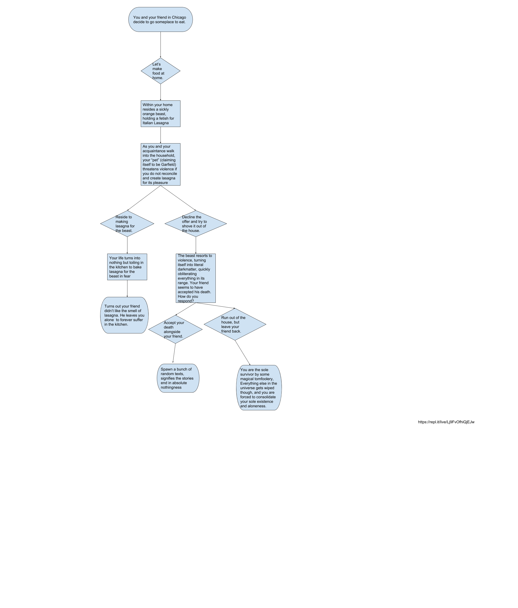

The game is pretty simple to play. Help Bandana Dee dodge the falling stars. A point will be rewarded when the player successfully dodges the stars. The game will end or the player will lose when Bandana Dee touches a star or any other obstacle in any way. The player must click on the green flag to restart or to replay the game. The game becomes increasingly difficult when the player surpasses 30 points, where the addition of tomatoes will fall alongside with the stars. When the player surpasses 60 points, the game becomes more difficult, since two more obstacles, mushrooms and hearts, will fall alongside the stars and the tomatoes. There is a random number generator next to the score to indicate the random number of obstacles falling. There is some randomness in the game in that the stars will randomly fall in different positions.
I don't play a lot of games but when I do play games, they are usually the dodging games, where the player has to dodge obstacles that are thrown their way. Because of that, I was inspired by some of my favorite simple games, thus my recreation of the dodging games that I play. Two successful points in the development of the process of my game were the scores in that it was able to add points whenever the player dodged an obstacle as well as the game's ability to allow the sprite to move to avoid the obstacles by using the right and left arrow keys. Two obstacles that I faced while creating the game were restarting the game as well as having the new sprites to fall. I originally wanted the game to restart immediately after the game ended, but I had to compromise and allow the game to restart when the green flag was pressed. As for the new sprites, I had to set the code so that the new sprites would fall when the player reached either 30 or 60 points. If I had more time, I would like to fulfill my original wish to have the game restart immediately after the game ended as well as to fix the various bugs that the game occassionally had when a player first started the game. An algorithm that contributed significantly to the game would be the 'if-then' block. I believe that it is an algorithm since it was able to solve different classes of problems and was able to connect the game together well altogether. The way the 'if-then' block works is basically when a certain criteria is needed to be met, the block will allow it to work if the scenario occurs, and when it does occur, then something or another scenario will take place.
This story is very nonsensical and is based off of a Garfield meme. The player and a friend decided to hang out for lunch and ultimately decide to cook at the the player's home. Upon entering the house, the player and the friend are met with Garfield and must decide on succumbing to Garfield's demands or to rebel.
Answer 1: The incremental development process of the story is that each scene is coded into Python bit by bit, in small increments and are tested along the way to see if the code works according to plan. The iterative development process of the story was the user's feedback, in which the user must type in a certain letter to achieve different outcomes from the same story. The difficulties that were faced while doing this project were thinking of an interesting plot as well as coding the program. While the issue with the plot was resolved quickly with a meme, the coding of the program was difficult. My partner and I had to remember the correct Python functions, including the 'if-else' statements and had to find a way to shorten the code so that it wouldn't be a big block of pure code. In the end, we resolved the problem by using 'elif' alongside the 'if-else' statements, thus reducing the amount of code we had. Answer 2: Organizing scenes of my story into functions is a form of procedural abstraction because it allows the conceptual description of each scene is separated from its implementation from the users. The advantages of doing this are having a clear visual of the different endings that will occur from every different option as well as being organized. Answer 3: Of all the books and stories that I've enjoyed, David Levithan's 'Every Day' stood out the most. The plot of the story was very different from any other book that I've read, in that the protagonist, a literal wandering soul named A, finds himself in a new body everyday. I found this story somewhat similar to this story project, in that A and the player must make decisions and those decisions will affect the person's life and the game.